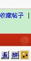

这个又怎么杀呢，神之一手在哪里？据说当年ＡＮＤＯ也没想出来
#1 这个又怎么杀呢，神之一手在哪里？据说当年ＡＮＤＯ也没想出来 作者：聂淼 发表时间：2009-2-9 13:25:56
=======上图对应的爱五子棋谱代码如下，以便你拆解：========
h8i9h7h6i8j8h10h11i7j7j9g6j6g9
======================================================
１５，哪里好
#2 Re:这个又怎么杀呢，神之一手在哪里？据说当年ＡＮＤＯ也没想出来 作者：无尽 发表时间：2009-2-9 13:55:49
=======上图对应的爱五子棋谱代码如下，以便你拆解：========
h8i9h7h6i8j8h10h11i7j7j9g6j6g9l8
======================================================
这个没有那么夸张吧 - - 15必胜
#3 Re:这个又怎么杀呢，神之一手在哪里？据说当年ＡＮＤＯ也没想出来 作者：游戏人间 发表时间：2009-2-9 14:43:24
两种必胜
#4 Re:这个又怎么杀呢，神之一手在哪里？据说当年ＡＮＤＯ也没想出来 作者：千羽鹤 发表时间：2009-2-9 19:08:31
晕，不会发图，10-14的话怎么杀呢#5 Re:这个又怎么杀呢，神之一手在哪里？据说当年ＡＮＤＯ也没想出来 作者：失落刀 发表时间：2009-2-9 19:12:04

点这个棋盘符号就可以发图了，你试验下。
#6 Re:这个又怎么杀呢，神之一手在哪里？据说当年ＡＮＤＯ也没想出来 作者：千羽鹤 发表时间：2009-2-9 21:06:30
收藏帖子的下面吗。。。我没有那个棋盘啊#7 Re:这个又怎么杀呢，神之一手在哪里？据说当年ＡＮＤＯ也没想出来 作者：有志青年 发表时间：2009-2-10 9:06:31
在发帖子的编辑器上呀
#8 Re:这个又怎么杀呢，神之一手在哪里？据说当年ＡＮＤＯ也没想出来 作者：骸 发表时间：2009-2-10 9:46:27
L7怎么样呢~#9 Re:这个又怎么杀呢，神之一手在哪里？据说当年ＡＮＤＯ也没想出来 作者：骸 发表时间：2009-2-10 10:23:16
=======上图对应的爱五子棋谱代码如下，以便你拆解：========
h8i9h7h6i8j8h10h11i7j7j9g6j6g9l8g7g8i5f8e8k10l11j10i10k9m7j5i6j11
======================================================
#10 Re:这个又怎么杀呢，神之一手在哪里？据说当年ＡＮＤＯ也没想出来 作者：摇滚虾仁 发表时间：2009-2-10 12:06:59
L7以后怎么赢？
#11 <font color="red">Re:这个又怎么杀呢，神之一手在哪里？据说当年ＡＮＤＯ也没想出来</font> 作者：无尽 发表时间：2009-2-10 17:32:19
=======上图对应的爱五子棋谱代码如下，以便你拆解：========
h8i9h7h6i8j8h10h11i7j7j9g6j6g9l8k7l6
======================================================
17做了一个长VCF
=======上图对应的爱五子棋谱代码如下，以便你拆解：========
h8i9h7h6i8j8h10h11i7j7j9g6j6g9l8l7k7m9k4
======================================================
=======上图对应的爱五子棋谱代码如下，以便你拆解：========
h8i9h7h6i8j8h10h11i7j7j9g6j6g9l8l7k7i5k9k10m7n6m6
======================================================
［ 失落刀 于 2009-2-10 19:20:45 时奖励此帖[金币加 20 威望加1］
强，谢谢，赞一个，顶一个
#12 Re:这个又怎么杀呢，神之一手在哪里？据说当年ＡＮＤＯ也没想出来 作者：聂淼 发表时间：2009-2-10 19:05:39
强，谢谢，赞一个，顶一个#13 Re:这个又怎么杀呢，神之一手在哪里？据说当年ＡＮＤＯ也没想出来 作者：骸 发表时间：2009-2-11 10:45:04
1======================================================
2
======================================================
3
======================================================
［ 有志青年 于 2009-2-13 10:23:46 时奖励此帖[金币加 20 威望加1］
#14 Re:这个又怎么杀呢，神之一手在哪里？据说当年ＡＮＤＯ也没想出来 作者：骸 发表时间：2009-2-11 10:46:58
=======上图对应的爱五子棋谱代码如下，以便你拆解：========
h8i9h7h6i8j8h10h11i7j7j9g6j6g9l7k10m6k8k5l4k6i6l6n6l9l8m8n9m5m7j5
======================================================
#15 Re:这个又怎么杀呢，神之一手在哪里？据说当年ＡＮＤＯ也没想出来 作者：骸 发表时间：2009-2-11 11:26:09
L7怎么样,高手指点下~~
#16 Re:这个又怎么杀呢，神之一手在哪里？据说当年ＡＮＤＯ也没想出来 作者：轻雨飞扬 发表时间：2009-2-13 9:57:45
=======上图对应的爱五子棋谱代码如下，以便你拆解：========
h8i9h7h6i8j8h10h11i7g9j9
======================================================
#17 Re:这个又怎么杀呢，神之一手在哪里？据说当年ＡＮＤＯ也没想出来 作者：无尽 发表时间：2009-2-13 11:00:36
=======上图对应的爱五子棋谱代码如下，以便你拆解：========
h8i9h7h6i8j8h10h11i7j7j9g6j6g9l7g7g8f9e9e8g10f7
======================================================
=======上图对应的爱五子棋谱代码如下，以便你拆解：========
h8i9h7h6i8j8h10h11i7j7j9g6j6g9l7g7g8f9i5i6
======================================================
13楼的15-L7白必胜
#18 Re:这个又怎么杀呢，神之一手在哪里？据说当年ＡＮＤＯ也没想出来 作者：骸 发表时间：2009-2-16 16:23:07
是啊,丢先了,~~~呵呵#19 Re:这个又怎么杀呢，神之一手在哪里？据说当年ＡＮＤＯ也没想出来 作者：骸 发表时间：2009-2-16 16:32:59
=======上图对应的爱五子棋谱代码如下，以便你拆解：========
h8i9h7h6i8j8h10h11i7j7j9g6j6g9l7g7g10
======================================================
白要怎样胜?
#20 Re:这个又怎么杀呢，神之一手在哪里？据说当年ＡＮＤＯ也没想出来 作者：潇洒 发表时间：2009-2-16 17:09:23
=======上图对应的爱五子棋谱代码如下，以便你拆解：========
h8i9h7h6i8j8h10h11i7j7j9g6j6g9l7g7g10e9f8e8
======================================================
#21 Re:这个又怎么杀呢，神之一手在哪里？据说当年ＡＮＤＯ也没想出来 作者：骸 发表时间：2009-2-17 9:10:48
=======上图对应的爱五子棋谱代码如下，以便你拆解：========
h8i9h7h6i8j8h10h11i7j7j9g6j6g9l7g7g10e9f8e8k10l11i10j10e10f10f9g8g5e6i6
======================================================
#22 Re:这个又怎么杀呢，神之一手在哪里？据说当年ＡＮＤＯ也没想出来 作者：骸 发表时间：2009-2-17 10:05:30
下在L7果然丢的不只是先手~~~